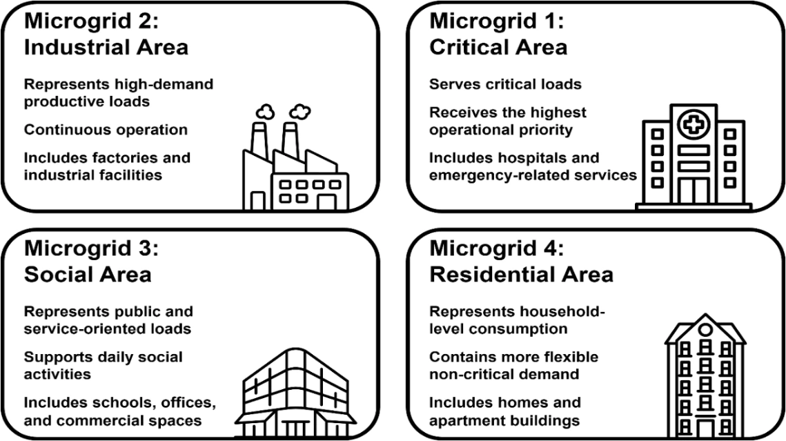
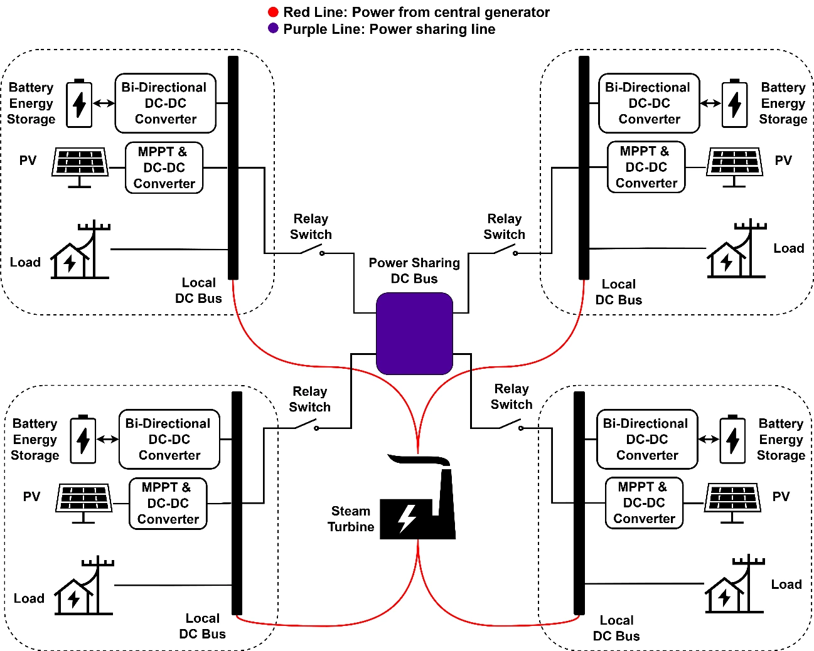
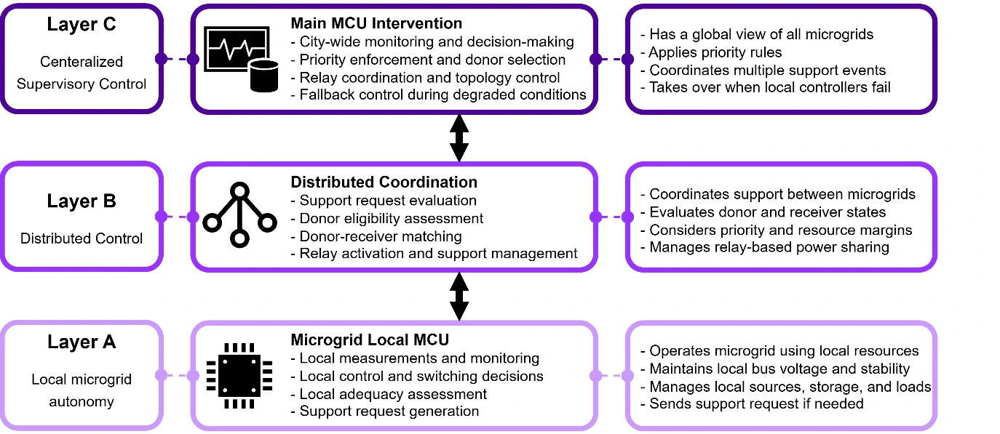

MSc thesis · Tampere University · 2026
CyberCity.
Four 12 V DC microgrids. One shared generator. Explore how local controllers, relay support, and the Main MCU keep priority loads supplied.
How to read this model
The four districts and their electrical connections follow thesis Figures 4–7. The thesis evaluated a pre-hardware digital twin. The buildings illustrate the district loads and the tabletop scene shows their physical context.
The browser calculates a top-level response to your controls. The published Simulink results are available in Monitoring.
Preparing 3D city…
Drag to orbit · Scroll or pinch to zoom
MATLAB / Simulink · Thesis Chapter 7
Original simulation figures
The published plots for each scenario show bus voltage, battery state of charge, supplied power, and load power.
Show plots
Open the image to inspect its axes and traces at full size.
See the thesis topology


